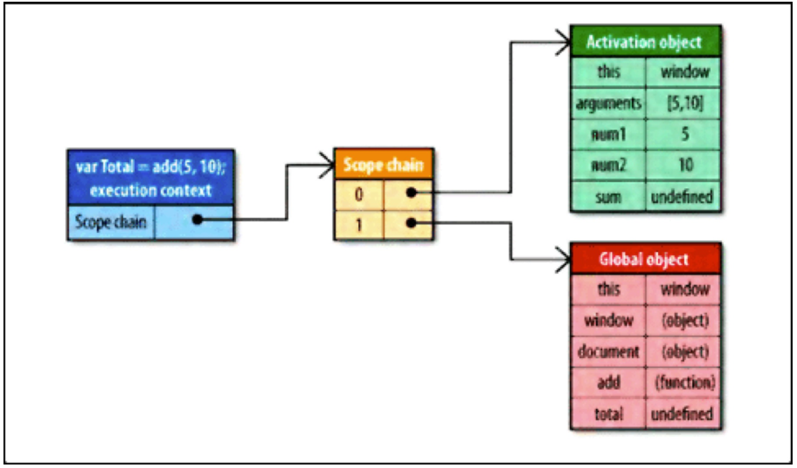
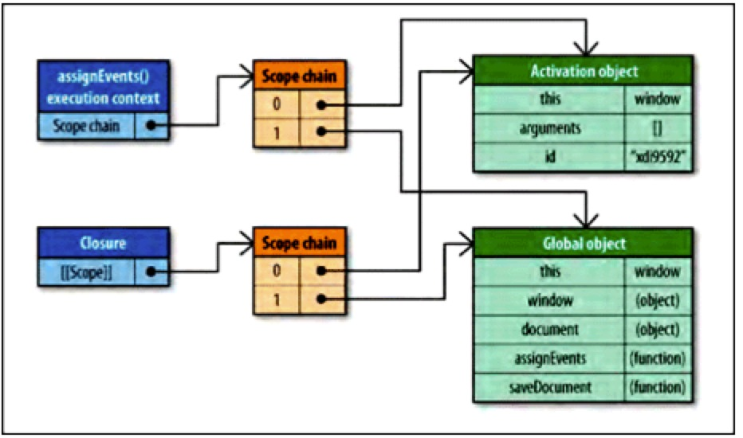
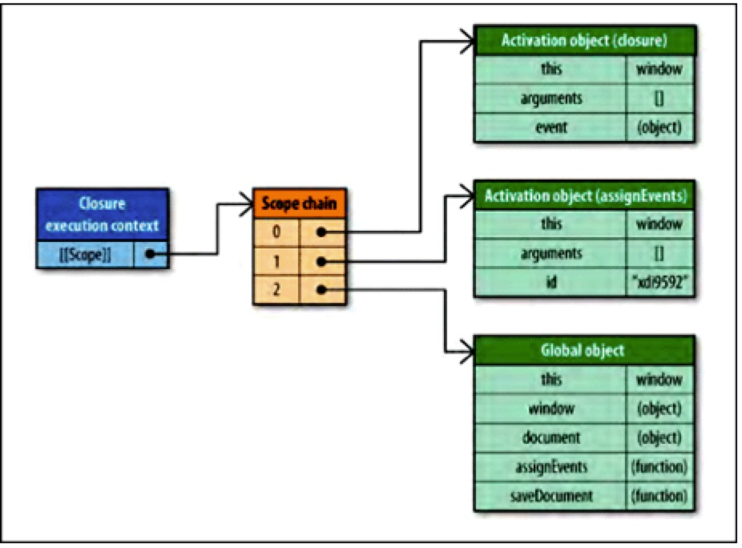
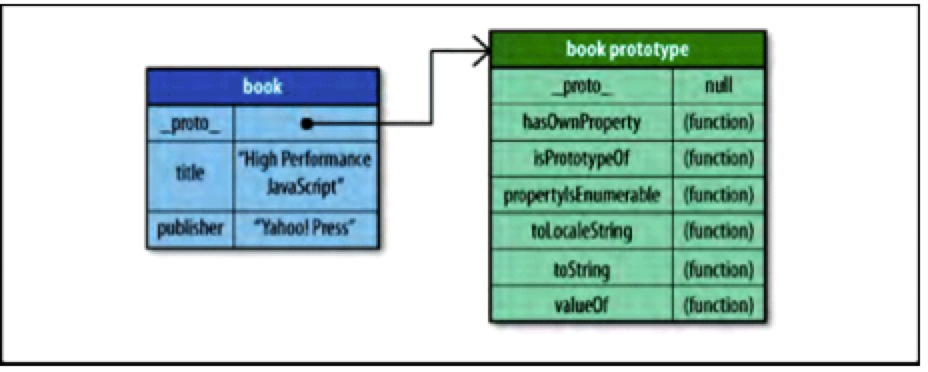

接上一篇，希望能写一个高性能Javascript专题。
第一篇：高性能Javascript--脚本的无阻塞加载策略。
参考摘录《高性能Javascript》。
经典计算机科学的一个问题是，数据应当存放在什么地方，以实现最佳的读写效率。数据存储是否得当，关系到代码运行期间数据被检索到的速度。在Javascript中，此问题相对简单，因为数据表现方式只有少量方式可供选择。在Javascript中，有四种基本的数据访问位置：
- Literal values 直接量
- 直接量仅仅代表自己，而不存储于特定的位置。
- Javascript的直接量包括：字符串(strings)、数字(numbers)、布尔值(booleans)、对象(objects)、数组(arrays)、函数(functions)、正则表达式(regular expressions)，具有特殊意义的空值(null)，以及未定义(undefined)。
- Variables 变量
- 开发人员用var关键字创建用于存储数据值。
- Array items 数组项
- 具有数字索引，存储一个Javascript数组对象。
- Object members 对象成员
- 具有字符串索引，存储一个Javascript对象。
每一种数据存储位置都具有特定的读写操作负担。在大多数情况下，对一个直接量和一个局部变量的数据访问的性能差异是微不足道的。具体而言，访问数组项和对象成员的代价要高一些，具体高多少，很大程度上取决于浏览器。一般的建议是，如果关心运行速度，那么尽量使用直接量和局部变量，限制数组项和对象成员的使用。为此，有如下几种模式，用于避免并优化我们的代码：
Managing Scope 管理作用域
作用域概念是理解Javascript的关键，无论是从性能还是功能的角度而言，作用域对Javascript有着巨大影响。要理解运行速度与作用域的关系，首先要理解作用域的工作原理。
Scope Chains and Identifier Resolution 作用域链和标识符解析
每一个Javascript函数都被表示为对象，它是一个函数实例。它包含我们编程定义的可访问属性，和一系列不能被程序访问，仅供Javascript引擎使用的内部属性，其中一个内部属性是[[Scope]]，由ECMA-262标准第三版定义。
内部[[Scope]]属性包含一个函数被创建的作用域中对象的集合。此集合被称为函数的作用域链，它决定哪些数据可以由函数访问。此函数中作用域链中每个对象被称为一个可变对象，以“键值对”表示。当一个函数创建以后，它的作用域链被填充以对象，这些对象代表创建此函数的环境中可访问的数据：
1 function add(num1, num2){
2 var sum = num1 + num2;
3 return sum;
4 }
当add()函数创建以后，它的作用域链中填入了一个单独可变对象，此全局对象代表了所有全局范围定义的变量。此全局对象包含诸如窗口、浏览器和文档之类的访问接口。如下图所示：（add()函数的作用域链，注意这里只画出全局变量中很少的一部分）

add函数的作用域链将会在运行时用到，假设运行了如下代码：
1 var total = add(5,10);
运行此add函数时会建立一个内部对象，称作“运行期上下文”(execution context)，一个运行期上下文定义了一个函数运行时的环境。且对于单独的每次运行而言，每个运行期上下文都是独立的，多次调用就会产生多此创建。而当函数执行完毕，运行期上下文被销毁。
一个运行期上下文有自己的作用域链，用于解析标识符。当运行期上下文被创建的时，它的作用域被初始化，连同运行函数的作用域链[[Scope]]属性所包含的对象。这些值按照它们出现在函数中的顺序，被复制到运行期上下文的作用域链中。这项工作一旦执行完毕，一个被称作“激活对象”的新对象就位运行期上下文创建好了。此激活对象作为函数执行期一个可变对象，包含了访问所有局部变量，命名参数，参数集合和this的接口。然后，此对象被推入到作用域链的最前端。当作用域链被销毁时，激活对象也一同被销毁。如下所示：（运行add()时的作用域链）

在函数运行的过程中，每遇到一个变量，就要进行标识符识别。标识符识别这个过程要决定从哪里获得数据或者存取数据。此过程搜索运行期上下文的作用域链，查找同名的标识符。搜索工作从运行函数的激活目标的作用域前端开始。如果找到了，就使用这个具有指定标识符的变量；如果没找到，搜索工作将进入作用域链的下一个对象，此过程持续运行，直到标识符被找到或者没有更多可用对象可用于搜索，这种情况视为标识符未定义。正是这种搜索过程影响了性能。
Identifier Resolution Performance 标识符识别性能
标识符识别是耗能的。
在运行期上下文的作用域链中，一个标识符所处的位置越深，它的读写速度就越慢。所以，函数中局部变量的访问速度总是最快的，而全局变量通常是最慢的（优化Javascript引擎，如Safari在某些情况下可用改变这种情况）。
请记住，全局变量总是处于运行期上下文作用域链的最后一个位置，所以总是最远才能被访问的。一个好的经验法则是：使用局部变量存储本地范围之外的变量值，如果它们在函数中的使用多于一次。考虑下面的例子：
1 function initUI(){
2 var bd = document.body,
3 links = document.getElementsByTagName("a"),
4 i = 0,
5 len = links.length;
6
7 while(i < len){
8 update(links[i++]);
9 }
10
11 document.getElementById("go-btn").onclick = function(){
12 start();
13 };
14
15 bd.className = "active";
16 }
此函数包含三个对document的引用，而document是一个全局对象。搜索至document，必须遍历整个作用域链，直到最后才能找到它。使用下面的方法减轻重复的全局变量访问对性能的影响：
1 function initUI(){
2 var doc=document,
3 bd = doc.body,
4 links = doc.getElementsByTagName("a"),
5 i = 0,
6 len = links.length;
7
8 while(i < len){
9 update(links[i++]);
10 }
11
12 doc.getElementById("go-btn").onclick = function(){
13 start();
14 };
15
16 bd.className = "active";
17 }
用doc代替document更快，因为它是一个局部变量。当然，这个简单的函数不会显示出巨大的性能改进，因为数量的原因，不过可以想象一下，如果几十个全部变量反复被访问，那么性能改进将显得多么出色。
Scope Chain Augmentation 改变作用域链
一个来说，一个运行期上下文的作用域链不会被改变。但是，有两种表达式可以在运行时临时改变运行期上下文。第一个是with表达式：
1 function initUI(){
2 with (document){ //avoid!
3 var bd = body,
4 links = getElementsByTagName("a"),
5 i = 0,
6 len = links.length;
7
8 while(i < len){
9 update(links[i++]);
10 }
11
12 getElementById("go-btn").onclick = function(){
13 start();
14 };
15
16 bd.className = "active";
17 }
18 }
此重写版本使用了一个with表达式，避免了多次书写“document”。这看起来似乎更有效率，实际不然，这里产生了一个性能问题。
当代码流执行到一个with表达式，运行期上下文的作用域被临时改变了。一个新的可变对象将被创建，它包含了指定对象（针对这个例题是document对象）的所有属性。此对象被插入到作用域链的最前端。意味着现在函数的所有局部变量都被推入到第二个作用域链对象中，所以局部变量的访问代价变的更高了。
正式因为这个原因，最好不要使用with表达式。这样会得不偿失。正如前面提到的，只要简单的将document存储在一个局部变量中，就可以获得性能上的提升。
另一个能改变运行期上下文的是try-catch语句的字句catch具有同样的效果。当try块发生错误的时，程序自动转入catch块，并将所有局部变量推入第二个作用域链对象中，只要catch之块执行完毕，作用域链就会返回到原来的状态。
1 try {
2 methodThatMightCauseAnError();
3 } catch (ex){
4 alert(ex.message); //作用域链在这里发生改变
5 }
如果使用得当，try-catch表达式是非常有用的语句，所以不建议完全避免。但是一个try-catch语句不应该作为Javascript错误解决的办法，如果你知道一个错误会经常发生，那么说明应该修改代码本身。不是么？
Dynamic Scope 动态作用域
无论是with表达式还是try-catch表达式的子句catch，以及包含()的函数，都被认为是动态作用域。一个动态作用域因代码运行而生成存在，因此无法通过静态分析（通过查看代码）来确定是否存在动态作用域。例如：
function execute(code) {
(code);
function subroutine(){
return window;
}
var w = subroutine(); // w的值是什么？
};
execute()函数看上去像一个动态作用域，因为它使用了()。w变量的值与传入的code代码有关。大多数情况下，w将等价于全局的window对象。但是如果传入的是:
1 execute("var window = {};");
这种情况下，()在execute()函数中创建了一个局部window变量。所以w将等价于这个局部window变量而不是全局window的那个。所以不运行这段代码是无法预知最后的具体情况，标识符window的确切含义无法预先知道。
因此，只有在绝对必要时刻才推荐使用动态作用域。
Closure,Scope,and Memory 闭包，作用域，和内存
闭包是Javascript最强大的一个方面，它允许函数访问局部范围之外的的数据。为了解与闭包有关的性能问题，考虑下面的例子：
1 function assignEvents(){
2 var id = "xdi9592";
3 document.getElementById("save-btn").onclick = function(event){
4 saveDocument(id);
5 };
6 }
assignEvents()函数为DOM元素指定了一个事件处理句柄。此事件处理是一个闭包，当函数执行创建时可以访问其范围内部的id变量。而这种方法封闭了对id变量的访问，必须创建一个特定的作用域链。
当assignEvents()函数执行时，一个激活对象被创建，并且包含了一些应有的内容，其中包含id变量。它将成为运行期上下文作用域链上的第一个对象，全局对象是第二个。当闭包创建的时，[[Scope]]属性与这些对象一起被初始化，如下图：

由于闭包的[[Scope]]属性包含与运行期上下文作用域链相同的对象引用，会产生副作用，通常，一个函数的激活对象与运行期上下文一同销毁。当涉及闭包时，激活对象就无法销毁了，因为仍然存在于闭包的[[Scope]]属性中。这意味着脚本中的闭包与非闭包函数相比，需要更多的内存开销。尤其在IE，使用非本地Javascript对象实现DOM对象，闭包可能导致内存泄露。
当闭包被执行，一个运行期上下文将被创建，它的作用域链与[[Scope]]中引用的两个相同的作用域链同时被初始化，然后一个新的激活对象为闭包自身创建。如下图：

可以看到，id和saveDocument两个标识符存在于作用域链第一个对象之后的位置。这是闭包最主要的性能关注点：你经常访问一些范围之外的标识符，每次访问都将导致一些性能损失。
在脚本中最好小心的使用闭包，内存和运行速度都值得被关注。但是，你可以通过上文谈到的，将常用的域外变量存入局部变量中，然后直接访问局部变量。
Object Members 对象成员
对象成员包括属性和方法，在Javascript中，二者差别甚微。对象的一个命名成员可以包含任何数据类型。既然函数也是一种对象，那么对象成员除了传统数据类型外，也可以包含函数。当一个命名成员引用了一个函数时，它被称作一个“方法”，而一个非函数类型的数据则被称作“属性”。
如前所言，对象成员的访问比直接量和局部变量访问速度慢，在某些浏览器上比访问数组还慢，这与Javascript中对象的性质有关。
Prototype 原型
Javascript中的对象是基于原型的，一个对象通过内部属性绑定到它的原型。Firefox，Safari和Chrome向开发人员开放这一属性，称作_proto_。其他浏览器不允许脚本访问这个属性。任何时候我们创建一个内置类型的实现，如Object或Array，这些实例自动拥有一个Object作为它们的原型。而对象可以有两种类型的成员：实例成员和原型成员。实例成员直接存在于实例自身而原型成员则从对象继承。考虑如下例子：
1 var book = {
2 title: "High Performance JavaScript",
3 publisher: "Yahoo! Press"
4 };
5 alert(book.toString()); //"[object Object]"
此代码中book有title和publisher两个实例成员。注意它并没有定义toString()接口，但这个接口却被调用且没有抛出错误。toString()函数就是一个book继承自原型对象的原型成员。下图表示了它们的关系：

处理对象成员的过程与处理变量十分相似。当book.toString()被调用时，对成员进行名为“toString”的搜索，首先从对象实例开始，若果没有名为toString的成员，那么就转向搜索原型对象，在那里发现了toString()方法并执行它。通过这种方法，book可以访问它的原型所拥有的每个属性和方法。
我们可以使用hasOwnProperty()函数确定一个对象是否具有特定名称的实例成员。实例略。
Prototype Chains 原型链
对象的原型决定了一个实例的类型。默认情况下，所有对象都是Object的实例，并继承了所有基本方法。如toString()。我们也可以使用构造器创建另外一种原型。例如：
1 function Book(title, publisher){
2 this.title = title;
3 this.publisher = publisher;
4 }
5
6 Book.prototype.sayTitle = function(){
7 alert(this.title);
8 };
9 var book1 = new Book("High Performance JavaScript", "Prototype Chains");
10 var book2 = new Book("JavaScript: The Good Parts", "Prototype Chains");
11 alert(book1 instanceof Book); //true
12 alert(book1 instanceof Object); //true
13 book1.sayTitle(); //"High Performance JavaScript"
14 alert(book1.toString()); //"[object Object]"
Book构造器用于创建一个新的book实例book1。book1的原型（_proto_）是Book.prototype，Book.prototype的原型是Object。这就创建了一条原型链。
注意，book1和book2共享了同一个原型链。每个实例拥有自己的title和publisher属性，其他成员均继承自原型。而正如你所怀疑的那样，深入原型链越深，搜索的速度就会越慢，特别是IE，每深入原型链一层都会增加性能损失。记住，搜索实例成员的过程比访问直接量和局部变量负担更重，所以增加遍历原型链的开销正好放大了这种效果。
Nested Members 嵌套成员
由于对象成员可能包含其他成员。譬如window.location.href(获取当前页面的url)这种模式。每遇到一个点号(.)，Javascript引擎就要在对象成员上执行一次解析过程，而且成员嵌套越深，访问速度越慢。location.href总是快于window.location.href，而后者比window.location.href.toString()更快。如果这些属性不是对象的实例成员，那么成员解析还要在每个点上搜索原型链，这将需要更多的时间。
Summary 总结
- 在Javascript中，数据存储位置可以对代码整体性能产生重要影响。有四种数据访问类型：直接量，变量，数组项，对象成员。对它们我们有不同的性能考虑。
- 直接量和局部变量的访问速度非常快，而数组项和对象成员需要更长时间。
- 局部变量比外部变量快，是因为它位于作用域链的第一个对象中。变量在作用域链中的位置越深，访问所需的时间就越长。而全局变量总是最慢的，因为它处于作用域链的最后一环。
- 避免使用with表达式，因为它改变了运行期上下文的作用域链。而且应当特别小心对待try-catch语句的catch子句，它具有同样的效果。
- 嵌套对象成员会造成重大性能影响，尽量少用。
- 一般而言，我们通过将经常使用的对象成员，数组项，和域外变量存入局部变量中。然后，访问局部变量的速度会快于那些原始变量。
通过上述策略，可以极大提高那些使用Javascript代码的网页应用的实际性能。
参考摘录《高性能Javascript》。